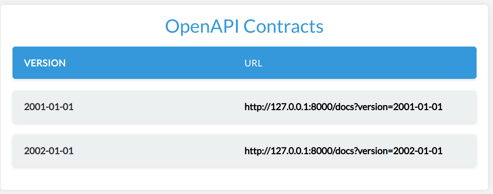

Tutorial
This guide provides a step-by-step tutorial for setting up automatic API versioning using Cadwyn. I will illustrate this with an example of a User API, where we will be implementing changes to a User's address. You can also see the advanced version of the service from this tutorial here.
Installation
A dummy setup
The recommended directory structure for cadwyn is as follows:
├── data
│ ├── __init__.py
│ ├── unversioned
│ │ ├── __init__.py
│ │ └── users.py
│ └── latest # The latest version of your schemas goes here
│ ├── __init__.py
│ └── users.py
└── versions
├── __init__.py # Your version bundle goes here
└── v2001_01_01.py # Your version changes go here
Here is an initial API setup where the User has a single address. We will be implementing two routes - one for creating a user and another for retrieving user details. We'll be using "int" for ID for simplicity. Please note that we will use a dict in place of a database for simplicity of our examples but do not ever do it in real life.
The first API you come up with usually doesn't require more than one address -- why bother?
So we create our file with schemas:
# data/latest/users.py
from pydantic import BaseModel
import uuid
class BaseUser(BaseModel):
address: str
class UserCreateRequest(BaseUser):
pass
class UserResource(BaseUser):
id: uuid.UUID
Then we create our version bundle which will keep track of our API versions:
# versions/__init__.py
from cadwyn.structure import Version, VersionBundle
from datetime import date
version_bundle = VersionBundle(
Version(date(2001, 1, 1)),
)
Generating versioned schemas
Now let's generate the only version of our schemas -- the one we created in the first step. We'll need the our API versions and the package representing the latest versions of our schemas.
# generate_schemas.py
from data import latest
from versions import version_bundle
from cadwyn import generate_code_for_versioned_packages
generate_code_for_versioned_packages(latest, version_bundle)
WARNING Cadwyn doesn't edit your imports when generating schemas so if you make any imports from versioned code to versioned code, I would suggest using relative imports to make sure that they will still work as expected after code generation.
Generating versioned routes
# routes.py
from data.latest.users import UserCreateRequest, UserResource
from versions import version_bundle
from data import latest
from cadwyn import VersionedAPIRouter, Cadwyn
import uuid
import uvicorn
database_parody = {}
router = VersionedAPIRouter()
@router.post("/users", response_model=UserResource)
async def create_user(payload: UserCreateRequest):
id_ = uuid.uuid4()
database_parody[id_] = {
"id": id_,
"address": payload.address,
}
return database_parody[id_]
@router.get("/users/{user_id}", response_model=UserResource)
async def get_user(user_id: uuid.UUID):
return database_parody[user_id]
app = Cadwyn(versions=version_bundle, latest_schemas_package=latest)
app.generate_and_include_versioned_routers(router)
uvicorn.run(app)
That's it! Our app is ready to run.
Cadwyn has just generated a separate directory with the versioned schemas for us: one for each API version defined in our VersionBundle. If we run the app, we will see the following dashboard:
Turning address into a list
During our development, we have realized that the initial API design was wrong and that addresses should have always been a list because the user wants to have multiple addresses to choose from so now we have to change the type of the "address" field to the list of strings.
# data/latest/users.py
from pydantic import BaseModel, Field
import uuid
class BaseUser(BaseModel):
addresses: list[str] = Field(min_items=1)
class UserCreateRequest(BaseUser):
pass
class UserResource(BaseUser):
id: uuid.UUID
# routes.py
from data.latest.users import UserCreateRequest, UserResource
from versions import version_bundle
from data import latest
from cadwyn import VersionedAPIRouter, Cadwyn
import uuid
import uvicorn
database_parody = {}
router = VersionedAPIRouter()
@router.post("/users", response_model=UserResource)
async def create_user(payload: UserCreateRequest):
id_ = uuid.uuid4()
database_parody[id_] = {
"id": id_,
"addresses": payload.addresses,
}
return database_parody[id_]
@router.get("/users/{user_id}", response_model=UserResource)
async def get_user(user_id: uuid.UUID):
return database_parody[user_id]
app = Cadwyn(versions=version_bundle, latest_schemas_package=latest)
app.generate_and_include_versioned_routers(router)
uvicorn.run(app)
But every user of ours will now have their API integration broken. To prevent that, we have to introduce API versioning. There aren't many methods of doing that. Most of them force you to either duplicate your schemas, your endpoints, or your entire app instance. And it makes sense, really: duplication is the only way to make sure that you will not break old versions with your new versions; the bigger the piece you duplicating -- the safer. Of course, the safest being duplicating the entire app instance and even having a separate database. But that is expensive and makes it either impossible to make breaking changes often or to support many versions. As a result, either you need infinite resources, very long development cycles, or your users will need to often migrate from version to version.
Stripe has come up with a solution: let's have one latest app version whose responses get migrated to older versions and let's describe changes between these versions using migrations. This approach allows them to keep versions for years without dropping them. Obviously, each breaking change is still bad and each version still makes our system more complex and expensive, but their approach gives us a chance to minimize that. Additionally, it allows us backport features and bugfixes to older versions. However, you will also be backporting bugs, which is a sad consequence of eliminating duplication.
Cadwyn is heavily inspired by this approach so let's continue our tutorial and now try to combine the two versions we created using versioning.
Creating the Migration
We need to create a migration to handle changes between these versions. For every endpoint whose response_model is UserResource, this migration will convert the list of addresses back to a single address when migrating to the previous version. Yes, migrating back: you might be used to database migrations where we write upgrade migration and downgrade migration but here our goal is to have an app of latest version and to describe what older versions looked like in comparison to it. That way the old versions are frozen in migrations and you can almost safely forget about them.
# versions/v2002_01_01.py
from pydantic import Field
from data.latest.users import BaseUser, UserCreateRequest, UserResource
from cadwyn.structure import (
schema,
VersionChange,
convert_request_to_next_version_for,
convert_response_to_previous_version_for,
RequestInfo,
ResponseInfo,
)
class ChangeAddressToList(VersionChange):
description = (
"Change user address to a list of strings to "
"allow the user to specify multiple addresses"
)
instructions_to_migrate_to_previous_version = (
# We assume that issubclass(UserCreateRequest, BaseUser) and
# issubclass(UserResource, BaseUser)
schema(BaseUser).field("addresses").didnt_exist,
schema(BaseUser).field("address").existed_as(type=str, info=Field()),
)
@convert_request_to_next_version_for(UserCreateRequest)
def change_address_to_multiple_items(request: RequestInfo):
request.body["addresses"] = [request.body.pop("address")]
@convert_response_to_previous_version_for(UserResource)
def change_addresses_to_single_item(response: ResponseInfo) -> None:
response.body["address"] = response.body.pop("addresses")[0]
See how we are popping the first address from the list? This is only guaranteed to be possible because we specified earlier that min_items for addresses must be 1. If we didn't, then the user would be able to create a user in a newer version that would be impossible to represent in the older version. I.e. If anyone tried to get that user from the older version, they would get a ResponseValidationError because the user wouldn't have data for a mandatory address field. You need to always keep in mind that API versioning is only for versioning your API, your interface. Your versions must still be completely compatible in terms of data. If they are not, then you are versioning your data and you should really go with a separate app instance. Otherwise, your users will have a hard time migrating back and forth between API versions and so many unexpected errors.
See how we added a migration not only for response but also for request? This will allow our business logic to stay completely the same, no matter which version it was called from. Cadwyn will always give your business logic the request model from the latest version or from a custom schema if you want to.
Grouping Version Changes
Finally, we group the version changes in the VersionBundle class.
# versions/__init__.py
from versions.v2002_01_01 import ChangeAddressToList
from cadwyn.structure import Version, VersionBundle
from datetime import date
version_bundle = VersionBundle(
Version(date(2002, 1, 1), ChangeAddressToList),
Version(date(2001, 1, 1)),
)
Let's run code generation, run our app, and then take a look at the generated dashboard and openapi schemas:

The endpoint above is from the 2001-01-01 version. As you see, our routes and business logic are for the latest version but our openapi has all information about all API versions which is the main goal of cadwyn: a large number of long-living API versions without placing any burden on your business logic.
Obviously, this was just a simple example and cadwyn has a lot more features so if you're interested -- take a look at the reference and recipes sections.